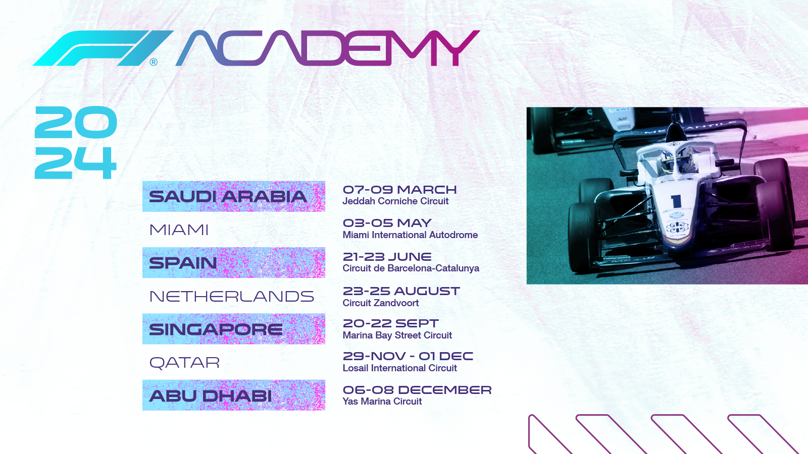

Calendario FIA Formula 1 Academy
05 de maio de 2024
Reprodução: FIA Formula 1 Academy / FIA
Desenvolvida em novembro de 2022, a F1 Academy está em seu segundo ano de atuação. Com apoio de
grandes empresas como Ferrari, Mercedes, MCLaren, entre outros; a competição feminina tem como
principal objetivo alcançar espaços no meio automobilístico que antes eram ocupados
majoritariamente
por homens. Essa revolução está apenas começando e ganhando visibilidade no esporte.
Contando com 7 circuitos ao redor do mundo, nos continentes da Europa, Ásia e América do Norte,
a F1
Academy está sendo realizada em colaboração com os circuitos da temporada de 2024 da Fórmula 1.
Dividindo os custos e recursos com as 10 equipes da F1, as quais estão apoiando integralmente as
mulheres que estão correndo com o nome de suas marcas.